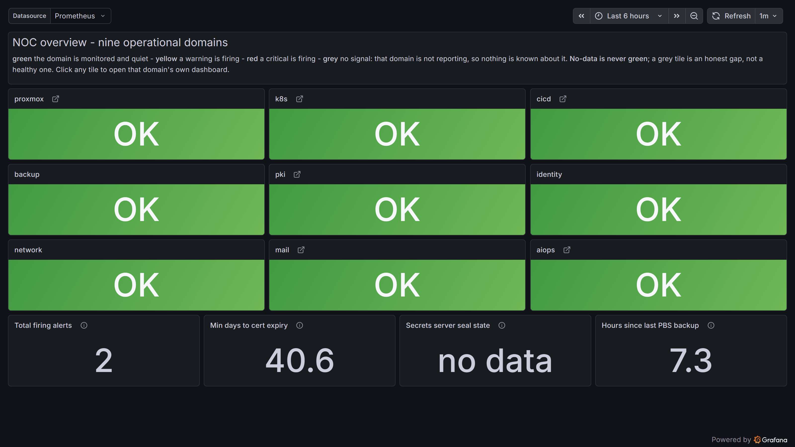
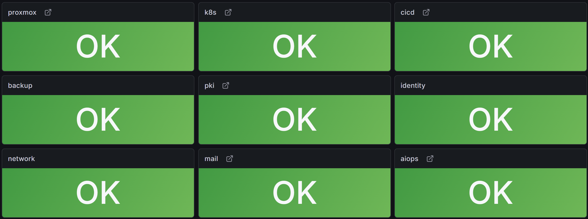
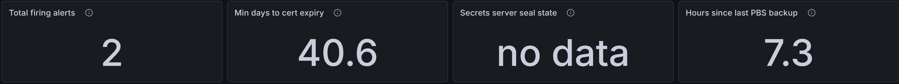
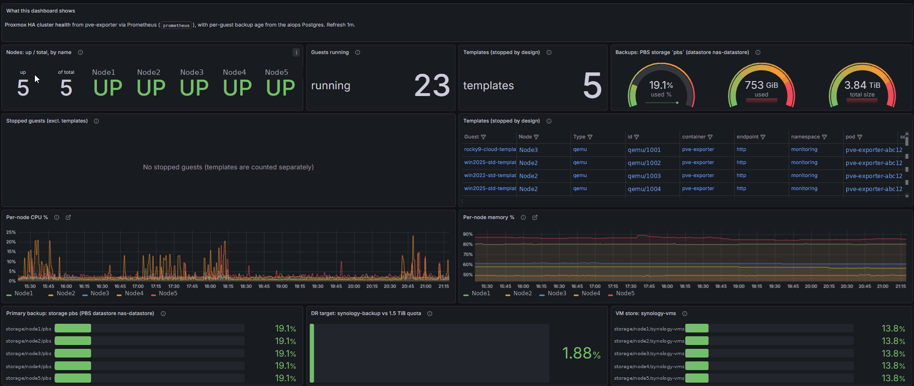
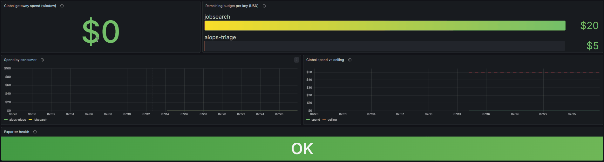

The NOC hub
A network operations centre is one screen you can glance at and know whether the estate is healthy. This lab has one: a single dashboard that every domain reports into, with nine tiles coloured by their worst problem and a row of facts that answer the whole question without opening anything. Two rules make it trustworthy: a tile with no data is never green, and the whole thing is generated from the backlog rather than arranged by hand.
Live status board
Grafana serves this board from the running lab. Each panel is reduced to one of four states
before it leaves the monitoring system: HEALTHY, DEGRADED,
CRITICAL, or NO SIGNAL. Each tile also opens a public drill-down.
The Infrastructure view shows the Proxmox virtual machines under descriptive service names.
The Kubernetes view shows running components and their CPU and memory use. Recording rules
replace source identifiers before Grafana can query them. Addresses, numeric IDs, hypervisor
placement, pod names, namespaces, management URLs, alert text, and adjustable queries stay private.
Checking the live dashboard.

One screen to start from
The pattern is simple and it is the whole point: instead of a wall of dashboards you have to know your way around, there is one hub. Each domain of the estate gets a tile, the tile shows that domain's worst current state, and clicking it takes you to that domain's own dashboard. The morning question, "is anything on fire," is answered by looking at one page.
The tiles, and what grey means
Nine tiles, one per domain, each coloured by the worst severity in that domain: green is healthy, amber and red escalate, and grey means no data. Grey is the honest one. Some domains are not fully wired yet, so their tiles are grey today, and the page says that plainly rather than hiding it. That matters because of a rule the hub enforces: a tile with no data must never render green. A green tile is a promise that the domain is healthy, and a domain you are not actually measuring cannot make that promise. So it stays grey until real data backs it, which is exactly the bug this rule exists to prevent: a monitoring screen that looks reassuring while measuring nothing.

The facts row
Under the tiles sit four supporting facts, the numbers you would otherwise open four dashboards to find: how many alerts are firing, how many days until the soonest certificate expires, whether the secrets server is sealed, and how long since the last backup completed. They live on the hub because together they answer "is the estate OK" at a glance, before any tile is clicked.

Click through to a domain
A tile is a door, not just a light. Clicking a domain's tile opens that domain's own overview dashboard, so the hub is the starting point and the detail is one click away. The picture shows the virtualization tile leading to the cluster overview, where the per-host detail lives.

The AI budget board
One tile leads somewhere worth its own mention: the AI spend board. It ties straight to the cost gating described on the AI page, layered budgets where the most restrictive limit wins, so the money side of running models is visible on the same wall as everything else. Spend figures are the owner's own; the number you see is a dated snapshot, not a live claim.

Generated, and it polices itself
The part a screenshot cannot show is the part that matters most: the hub is not arranged by hand, it is generated from the backlog, and the generator is the enforcement point. It fails the build if a domain is missing its tag or if a domain has no single primary dashboard to link to, a drift check in CI catches a hub that has fallen out of step, and a nightly job reconciles it against what Grafana is actually serving. That is what keeps the no-data-never-green rule and the one-tile-per-domain shape true over time, rather than true on the day it was built. A hand-maintained wall drifts; a generated one that fails its own checks does not.